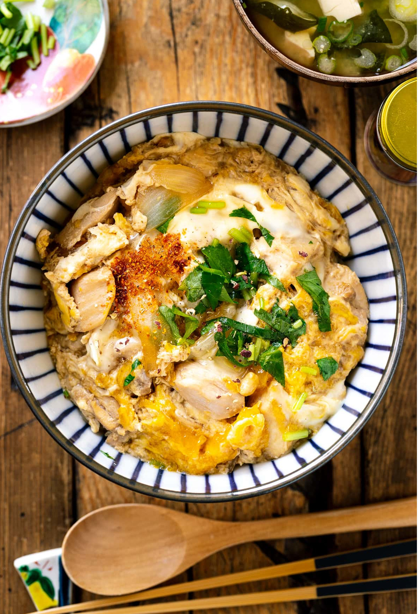

Oyakodon

Description
Oyakodon (親子丼) is a Japanese chicken and egg rice bowl.
Ingredients
- Chicken thighs
- Sake
- Onion
- Eggs
- Mitsuba (三つ葉)
- Steamed rice
- Seasonings: Dashi (だし), soy sauce and sugar
Steps
- Prepare the ingredients (cut the onions and chicken, and crack the eggs).
- Cook the onions in the seasoning mixture.
- Add the chicken and cook until no longer pink.
- Drizzle the egg mixture.
- Garnish with the mitsuba.
- Once finished, spoon the dish over the bowl of steamed rice.